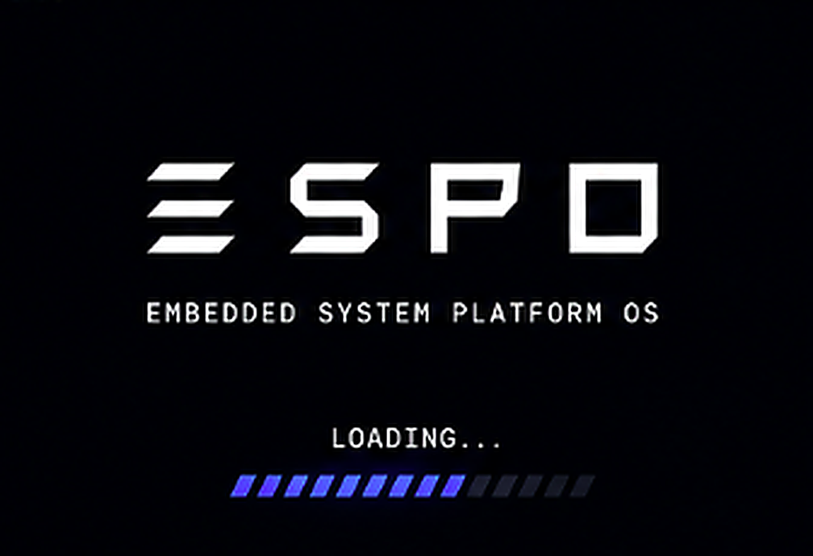
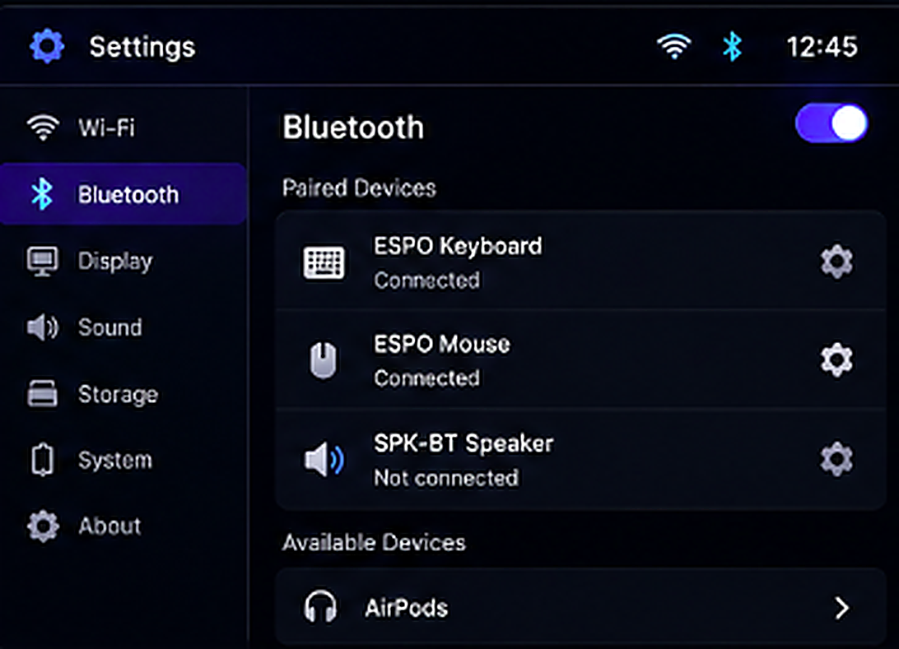
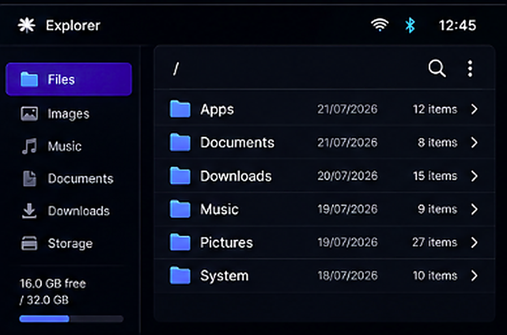

01
Boot
A clean startup screen with the original white ESPO logo and blue loading accents.
ESPO is a modern embedded operating system being designed for compact development boards, small displays and joystick-driven devices.
These are design concepts, not final screenshots. More of ESPO will be revealed as development progresses.

A clean startup screen with the original white ESPO logo and blue loading accents.

Wi-Fi, Bluetooth, display controls and board information in one compact interface.

A lightweight file browser designed for small screens and simple joystick navigation.
Logo, visual direction and core interface plan.
Boot screen, navigation, sleep behaviour and built-in apps.
First real-device testing begins after the development kit arrives.
ESPO Manager, firmware downloads and public documentation.
ESPO is planned as a lightweight system for embedded hardware—not a laptop replacement. Version 1 focuses on a four-app home screen, Explorer, Settings, Games, system information, automatic sleep and smooth navigation.
ESPO is currently an independent concept in early development. Interface designs and planned features may change before release.